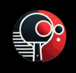
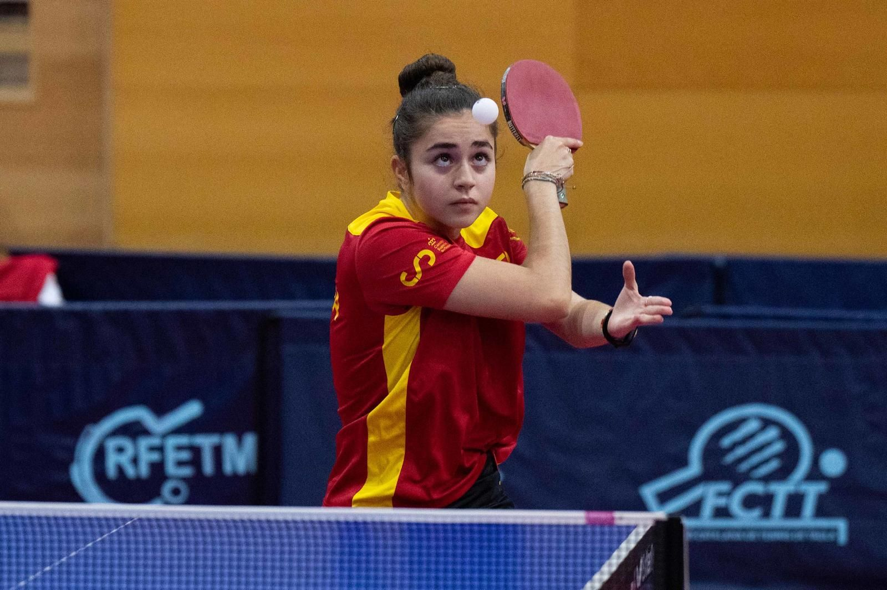
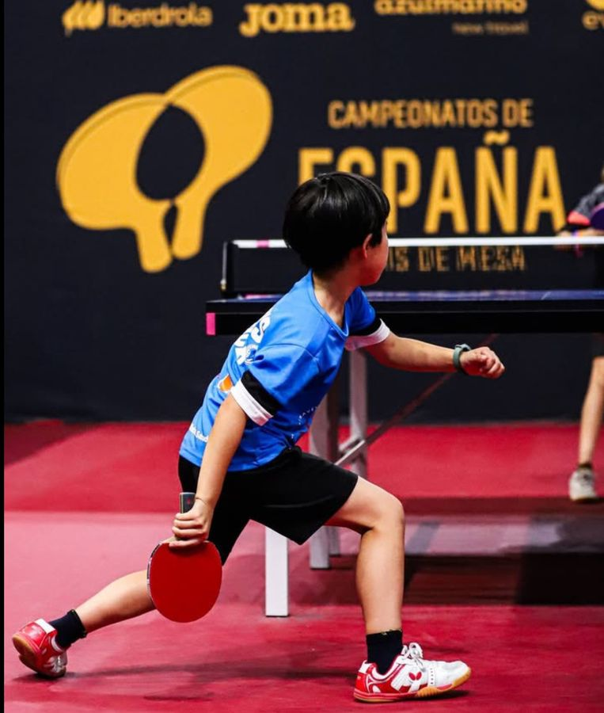
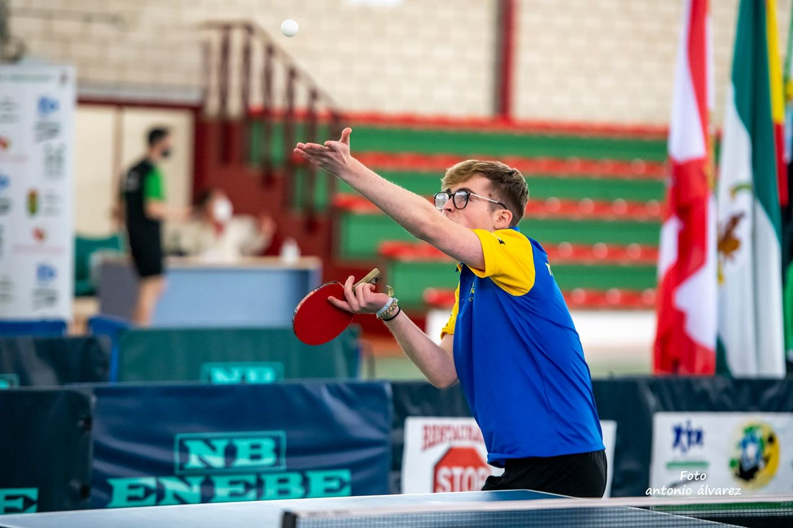

0
clubes federados en España

SETPOINTTienda física + online · Carmona (Sevilla)
La tienda especializada que acerca el tenis de mesa a jugadores y clubes de Andalucía occidental, con asesoramiento personalizado y gratuito y envíos en menos de 24 h.
01 · El reto
Los jugadores y clubes dependen sobre todo de la compra online. Así es más difícil recibir asesoramiento especializado, probar productos o conseguir material rápido.
0
clubes federados en España
0
jugadores federados en España
0
jugadores en 91 clubes andaluces
0
tiendas especializadas en toda España, solo 1 en Andalucía
Fuente: datos de 2025 del Consejo Superior de Deportes (CSD), recogidos en el proyecto Set Point.
02 · Propuesta única de venta
“Set Point acerca el tenis de mesa especializado a jugadores y clubes de Andalucía occidental, con asesoramiento totalmente personalizado y gratuito para elegir el material adecuado y envíos en menos de 24 horas.”
Una tienda en Andalucía occidental, donde no hemos encontrado ninguna tienda física comparable especializada al 100 %. Menos distancia para jugadores y clubes de la zona.
Atención totalmente personalizada y sin coste para recomendarte material según tu nivel, estilo y objetivos. Muchos jugadores no conocen todas las opciones que existen.
Nos comprometemos a enviar los pedidos en menos de 24 horas. Así eliminamos uno de los grandes problemas de depender de tiendas lejanas.
03 · Para quién
Nuevos jugadores que descubren el tenis de mesa en colegios, escuelas deportivas o clubes. Quieren iniciarse, aprender y disfrutar.
Qué les ofrecemos: material adecuado para empezar y asesoramiento a las familias. Les acompañamos en su evolución.
Personas que juegan por ocio o están empezando. Quieren aprender, mejorar y encontrar material apropiado sin necesidad de conocimientos técnicos avanzados.
Qué les ofrecemos: orientación sencilla y personalizada para evitar compras equivocadas o material excesivo para su nivel.
Jugadores que entrenan y compiten con regularidad. Buscan rendimiento, primeras marcas, novedades y material técnico.
Qué les ofrecemos: material de calidad, variedad y asesoramiento especializado según su estilo de juego, nivel y objetivos.
Entidades que compran para sus equipos, escuelas y socios. Buscan un proveedor fiable, con disponibilidad y atención especializada.
Qué les ofrecemos: pedidos agrupados, una relación estable y descuentos según el volumen de compra.
Mejorar, aprender, competir, conocer el material, seguir la actualidad del tenis de mesa y formar parte de una comunidad.
Hay pocas tiendas especializadas y suelen estar lejos. Dependen del envío y no conocen bien qué combinaciones de material les irían mejor. Les da miedo elegir mal.
04 · Asesoramiento gratuito
Es una orientación general. En Set Point te hacemos una recomendación personalizada y gratuita, en tienda, por teléfono o por e-mail.
05 · La tienda
¡Bienvenido a Set Point! Te ofrecemos el mejor equipamiento para impulsar tu juego: maderas, gomas, camisetas y calzado.

Novedad
Hazte con la tuya y siéntete orgulloso de lucir los colores del equipo nacional.
Comprar ahora06 · Blog
En Set Point sabemos que elegir la pala de tenis de mesa adecuada puede marcar la diferencia en tu rendimiento y disfrute del juego. Ya seas principiante, aficionado o jugador avanzado, contar con el equipo adecuado es clave. En esta guía te ayudamos a encontrar la pala perfecta según tu nivel y estilo de juego.
Si estás empezando, lo más importante es desarrollar la técnica y el control de la pelota. Busca una pala con:

Cuando ya tienes experiencia, puedes empezar a jugar con más velocidad y efectos. Para ello, elige una pala con:
Si ya compites o tienes un nivel avanzado, necesitas una pala que se adapte a tu estilo de juego. Considera:
Si dudas sobre qué material necesitas, no te lo pienses dos veces y contacta con nuestro equipo. Te asesoraremos para que encuentres la pala o el calzado que mejor se adapte a ti.
El saque es uno de los golpes más importantes en el tenis de mesa. Un buen saque puede darte ventaja desde el inicio del punto y poner en apuros a tu rival. En Set Point te damos algunos consejos para mejorar tu saque y hacerlo más efectivo:

07 · Comunidad
Atracción · Consideración
Sesiones en la tienda con entrenadores y jugadores profesionales sobre técnica, elección de material y cómo mejorar tu juego.
Atracción · Fidelización
Pequeñas competiciones periódicas en la tienda, con un formato rápido en el que todo el mundo participa.
Evento anual
Nuestro propio torneo, una vez al año y con el nombre de la tienda. Será uno de los grandes eventos de la marca.
Todo el embudo
Vídeos, entrevistas, consejos y fotos de cada evento para redes sociales y YouTube.
Torneo a 3 puntos · versión online
Mueve la pala con el ratón, el dedo o las flechas ← →. Gana quien llegue antes a 3 puntos.
08 · Dónde encontrarnos
Vídeos cortos para descubrirnos: consejos, novedades, entretenimiento y contenido con jugadores.
Análisis más completos, tutoriales, comparativas y pruebas de material.
Público adulto, clubes y comunidades de aficionados, como el grupo “Tenis de mesa español”.
Canal directo para resolver dudas y recibir asesoramiento personalizado.
Catálogo, información de producto y el lugar principal para comprar online.
09 · El hueco en el mapa
Hay tiendas especializadas en España, pero están repartidas y lejos unas de otras. En Andalucía occidental no hemos encontrado ninguna tienda física comparable especializada al 100 %. Set Point no competirá solo por precio: nuestra baza es la cercanía, la atención individual y la rapidez.
Tienda física y online, amplio catálogo y asesoramiento técnico especializado.
Más de 20 años de experiencia; tienda con cita previa y material para distintos niveles.
Especialización, venta online y asesoramiento según el estilo de juego.
Tienda especializada física y online, con variedad de marcas y productos.
Competidores consultados el 26/10/2026. Mapa esquemático, sin escala.
10 · Patrocinios y embajadores
Set Point suministrará o cederá material a jóvenes jugadores con proyección y colaborará con jugadores de alto nivel nacional. Serán nuestros referentes y embajadores: darán visibilidad y confianza y mostrarán contenido real de entrenamientos, competiciones, consejos y pruebas de material.
11 · El proyecto
Toca cada cuadrante para darle la vuelta.
Queremos fomentar la práctica deportiva y acercar el tenis de mesa a más personas, con actividades, torneos y acciones que den más visibilidad a este deporte.
Apostamos por la sostenibilidad y por trabajar con proveedores comprometidos con el medio ambiente.
Set Point
Ven a vernos, escríbenos o llámanos. Te recomendamos el material adecuado sin coste.
Recibe descuentos y novedades de Set Point.